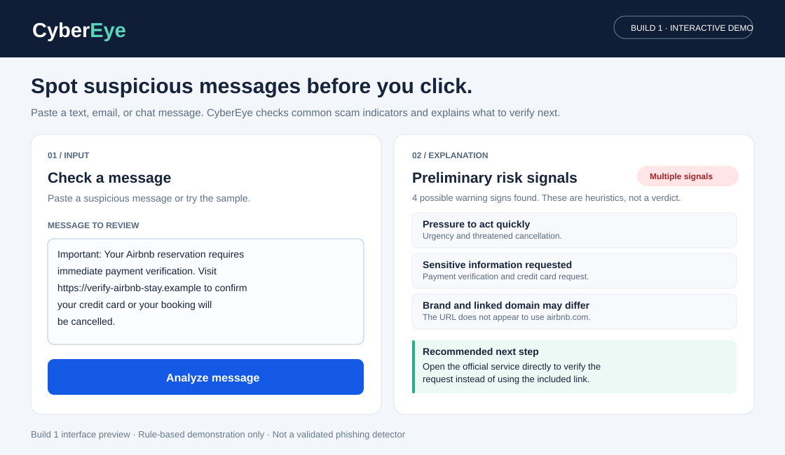

A personal cybersecurity assistant that helps people spot warning signs in suspicious messages and links before they act.
Current Status: Build 1: interactive browser prototype (rule-based demonstration, not yet AI-powered)
Demo: Try the CyberEye prototype

Who is this for? Initially, friends and NYU Stern classmates who make travel reservations or receive unexpected account, delivery, or payment messages. This is a group I can reach directly to test the workflow.
Problem: Scam messages increasingly resemble legitimate communications from familiar services. Someone may receive a message that refers to a real booking or account and directs them to a convincing-looking verification or payment page. The user has to decide quickly whether the request is authentic, often without knowing which signals to look for.
The painful "Before" workflow: A user receives a questionable text, email, or WhatsApp message, searches for the sender or domain, compares it with the official service, and tries to decide whether to open the link. This can be time-consuming and easy to get wrong, especially when the message creates urgency.
The "After" workflow with CyberEye: Instead of clicking the link, the user copies the message into CyberEye. The tool highlights suspicious language or domain patterns, explains why the signs matter, and suggests a safer way to verify the request through the official service. Its purpose is to support the user's decision, not guarantee a message is safe or malicious.
Riskiest assumption: People will find an explainable risk assessment useful enough to check a suspicious message before clicking, and the tool can provide that assessment without misleading users when signs are incomplete or benign.
Current architecture: Pasted message → browser-side JavaScript rules → list of indicators + suggested verification step. The Build 1 prototype does not send data to an AI model, contact external URLs, or sandbox links.
Potential next version: Pasted message → structured risk analysis using an AI model and carefully selected URL/domain signals → concise explanation with uncertainty and safe next steps. Any external lookups would need privacy and security safeguards.
Early success criteria (to validate): A user can understand the output without cybersecurity expertise, finish a review in one sitting, and identify the independent verification step. Track false alarms and missed red flags rather than relying on a single "safe" score.